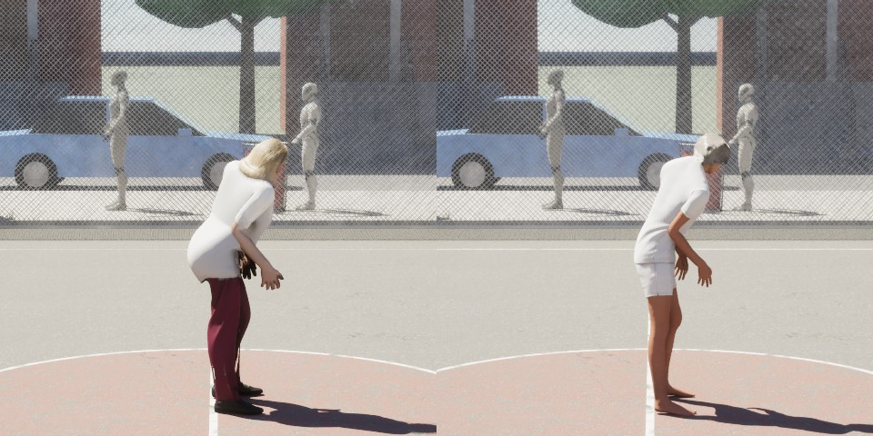
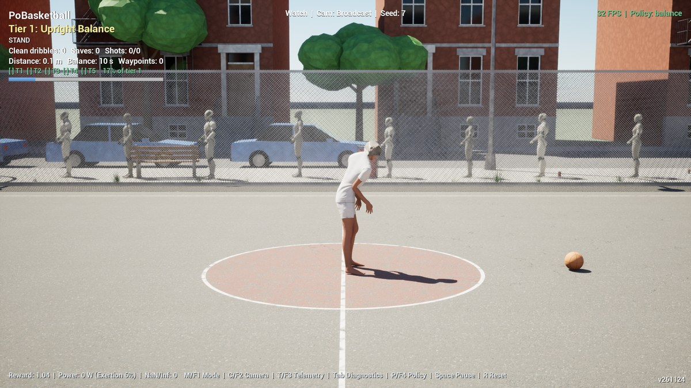
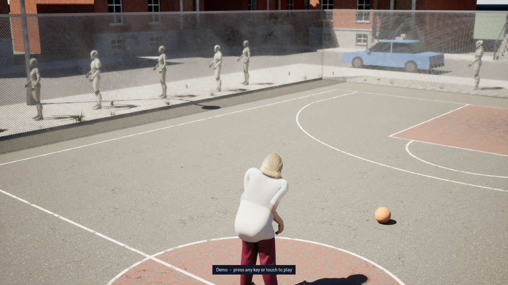
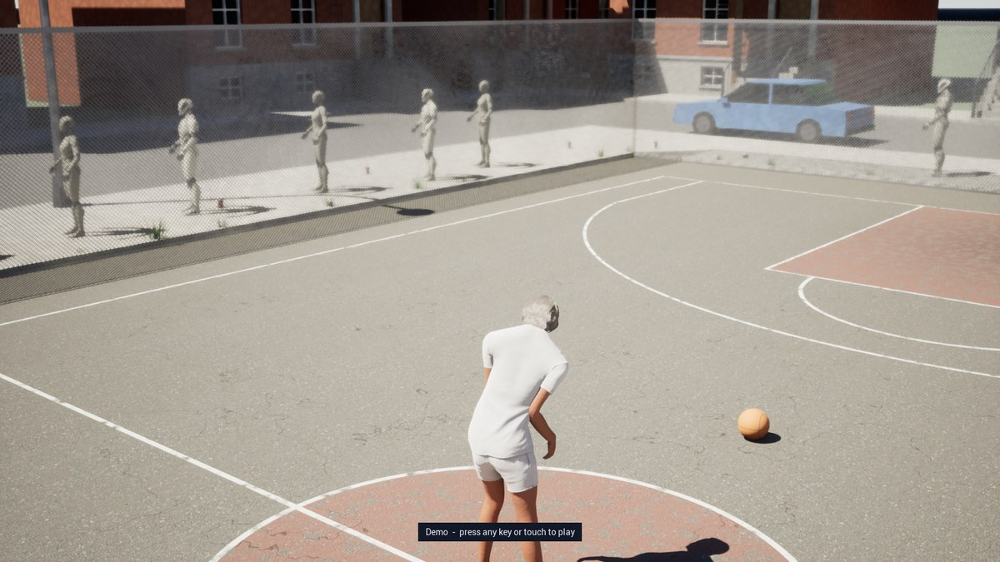

PoBasketball · Unreal 5.8 · 2026-11-24 · local only
Grandma as a MetaHuman, driven by the same physics
A MetaHuman built from Epic's "Grace" preset (cloud face rig and skin textures), sized to 180 cm with MetaHuman's body
constraints, then snapped onto Manny's joints (the skeleton the MuJoCo humanoid was built from) by the existing Blender
re-proportioning script: max joint error 0.00 mm. The bone mapper drives it exactly like the old skin; policies, physics and
observations are unchanged. Everything MetaHuman is git-ignored (public repo); without it the game shows the old grandma.

Same frame, same policy and pose. Left: before. Right: MetaHuman.
Broadcast and demo cameras
Before

After

Before, demo camera

After, demo camera
Known gaps
Hair is the low-detail "helmet" LOD. Bound grooms render nothing on our components (Epic's own Blueprint renders the same
binding), and without a binding the card LODs are invisible and the automatic LOD switch crashed the game at the first close-up.
So the hair is held rigid on the head at LOD 5. Fixing the binding is the open item.
Outfit is Epic's default T-shirt and shorts, barefoot. The old grandma had a cardigan, trousers and shoes.
No lip-sync on the new face yet (the voice drives the old skin's morph targets); that is the Audio2Face step.